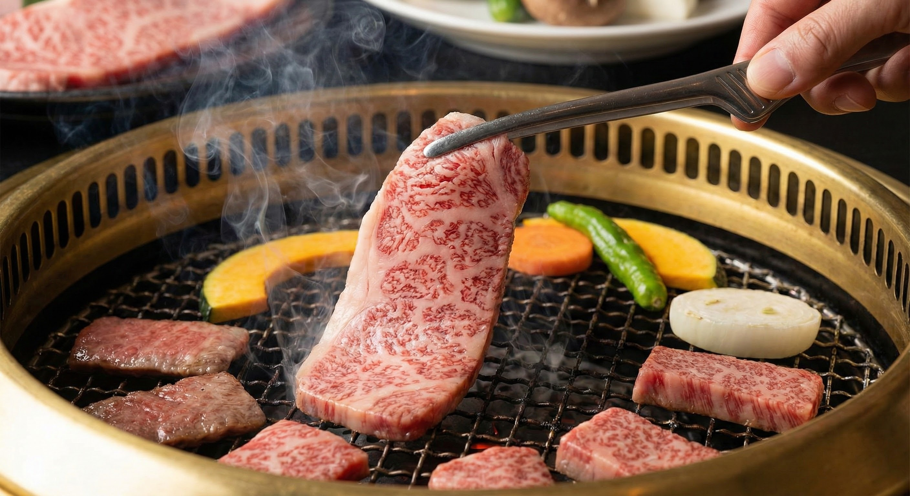
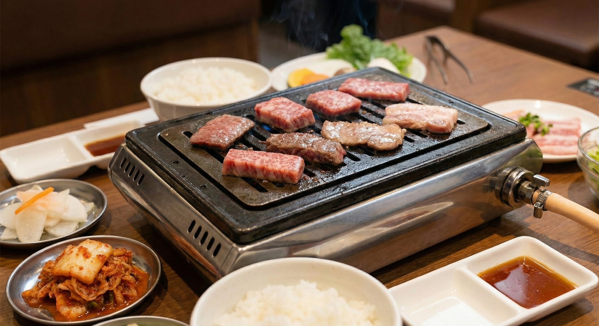
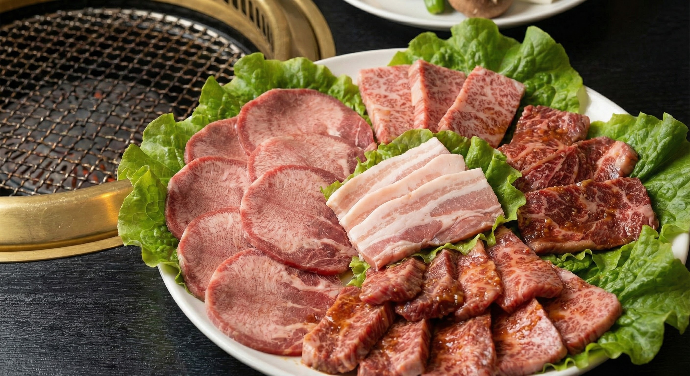
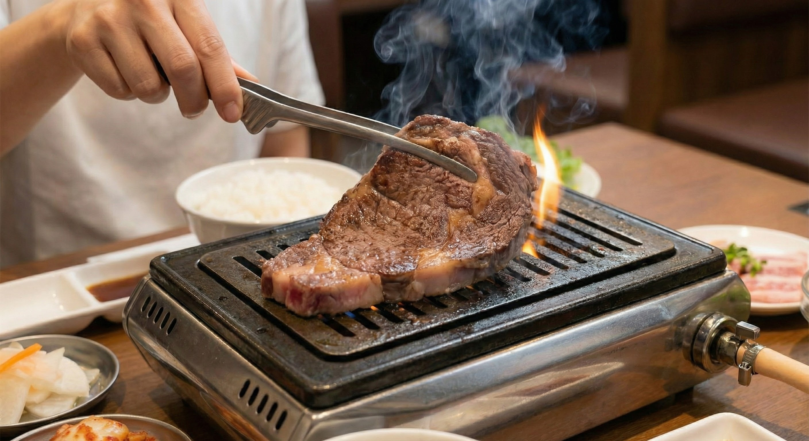
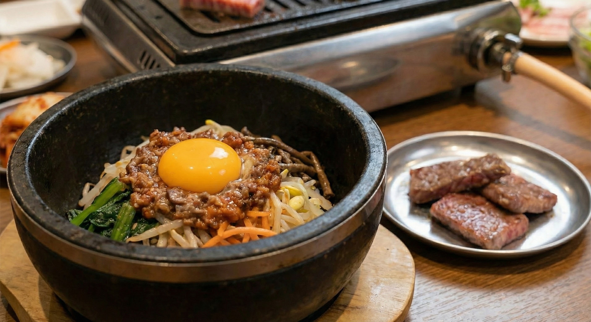
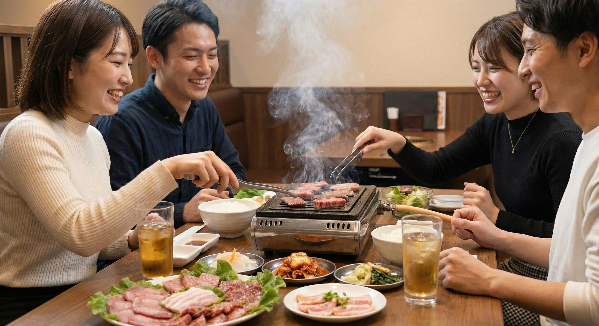
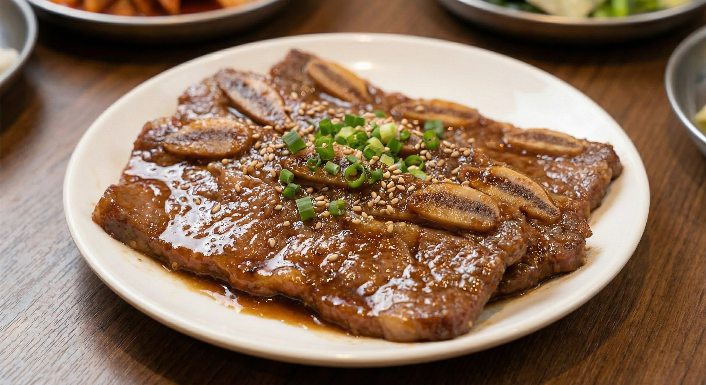

武屋のこだわり
鮮度への執念
店主自ら岐阜まで足を運び、自身の目で厳選した内臓のみを仕入れています。その日の分、あるいは翌日分までしか仕入れない徹底ぶり。
特に「子袋」は極太で透き通ったピンク色のものしか扱いません。ホルモンが苦手な方こそ、ぜひ一度ご賞味ください。概念が変わります。
受け継がれる屋台の味
一宮で54年愛された屋台ラーメンの味を継承。
見た目は真っ黒な「名古屋ブラック」ですが、味は驚くほどあっさり。動物系と野菜の甘みが溶け出したスープは、焼肉の〆に最高の一杯です。
写真








店舗情報
- 店名
- とんちゃん焼肉の武屋
- 住所
- 〒462-0866 愛知県名古屋市北区瑠璃光町1丁目2-1 サントピア若葉 1-D
- 電話番号
- 052-919-6006
- 営業時間
- 17:00～23:00（L.O. 22:00）
※店主の気分次第で延長あり - 定休日
- 月曜日（要確認）
- アクセス
- 名古屋市営地下鉄名城線「志賀本通駅」出口4から徒歩約2分